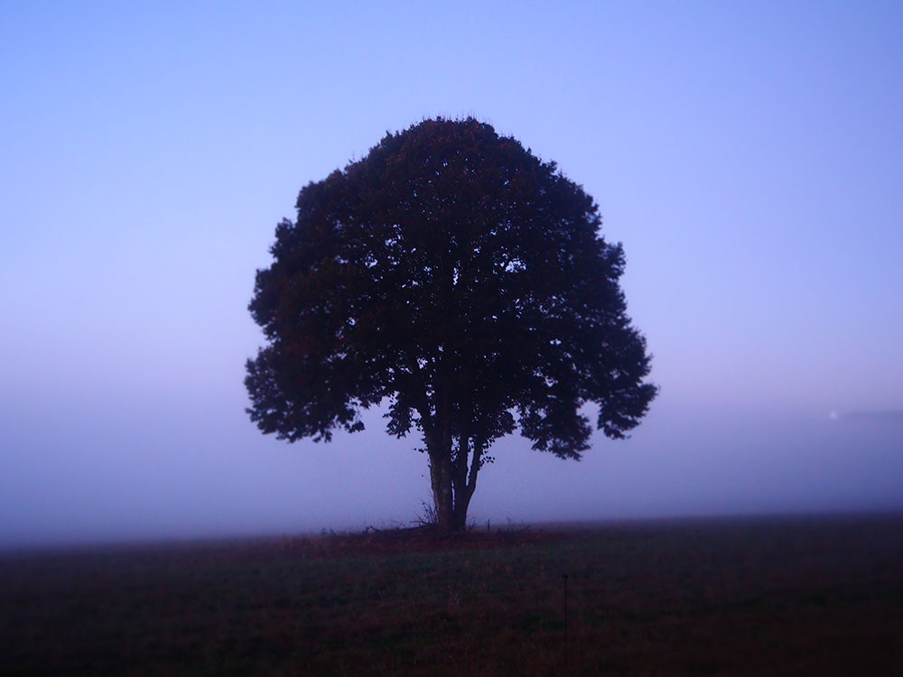
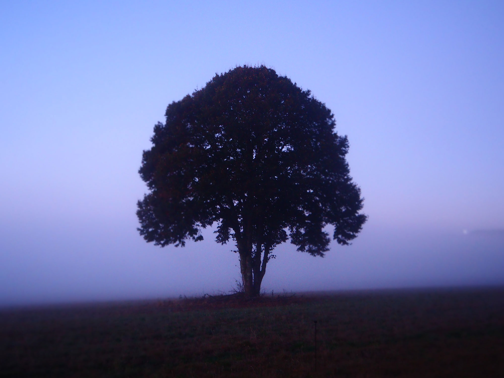
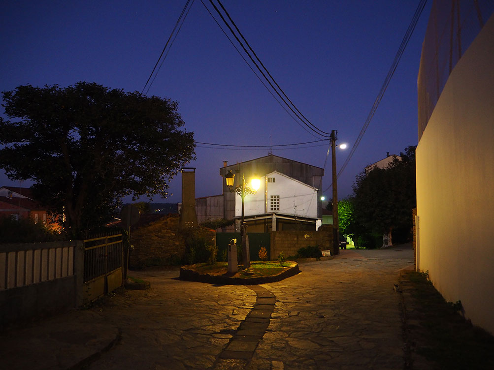
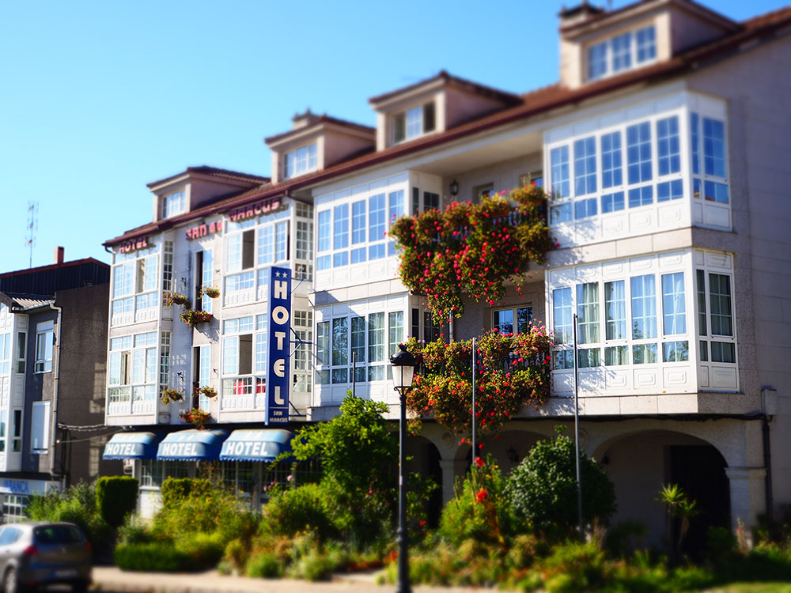
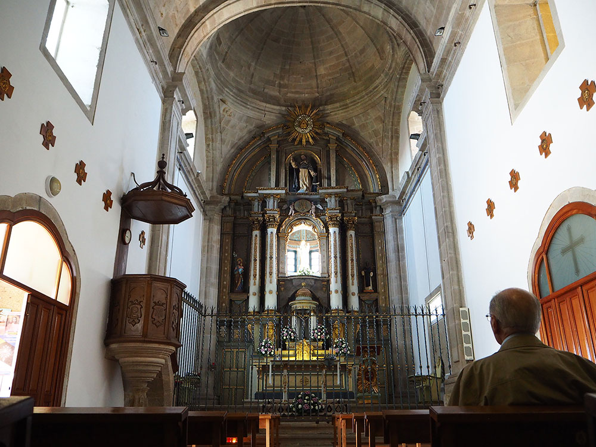

Parallax Scrolling
Section1


높은 목표를 세우고, 스스로 채직찔 한다.
Section2

결과도 중요하지만, 과정을 더 중요하게 생각한다.
Section3
매 순간에 최선을 다하고, 끊임없이 변화한다.
Section4
모든지 기본을 중요하게 생각한다.
Section5

천 마디의 말보다 하나의 행동이 더 값지다.
Section6
조그만 성공에 만족하지 않으며, 방심을 경계한다.
Section7
내 스타일을 다른 사람에게 강요하지 않는다.
Section8
자신의 이익을 위해 다른 사람을 이용하지 않는다.
Section9

나보다 다른 사람의 의견도 존중한다.